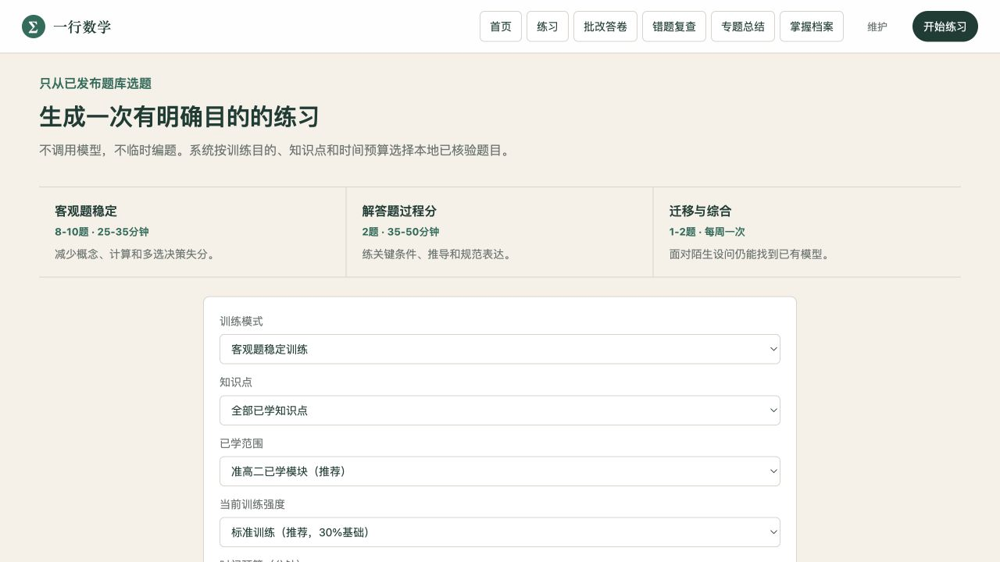
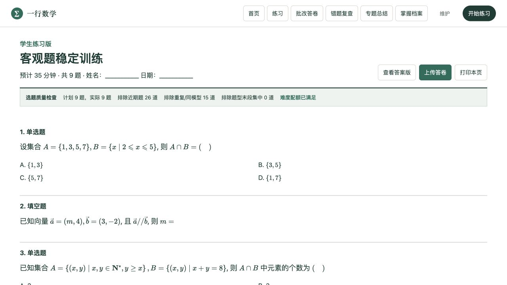
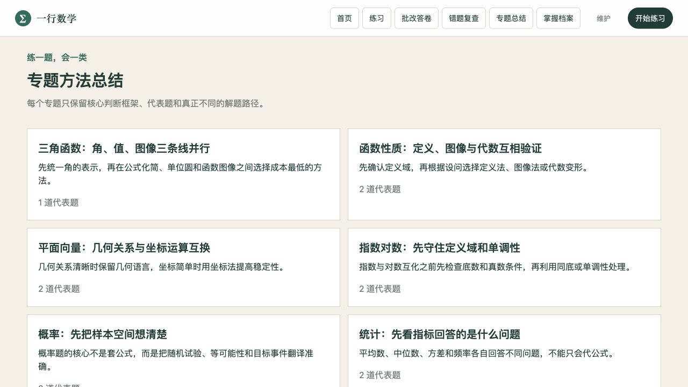

练习、评分和错题彼此断开
题目靠人工整理，练习靠经验挑选，做错后又回到零散记录。投入了时间，却很难回答下一步该练什么。
Learning SaaS · 02
让题目来源、练习生成、纸质作答、人工确认、评分证据和复查形成一条可信的学习闭环。
Product screens




题目靠人工整理，练习靠经验挑选，做错后又回到零散记录。投入了时间，却很难回答下一步该练什么。
题目来源、选题理由、确认后的评分、错题复查和专题方法沿同一条证据链连接起来。
学生获得更具体的练习路径，辅导者减少重复整理与盲目出题，把精力留给错误诊断和方法讲解。
Purpose
项目服务一名高中学生，目标是把真实题目、纸质练习、作答确认、评分证据、错题复查和专题学习连成一个持续运行的闭环。每次练习都应该回答三个问题：为什么选这些题、学生具体卡在哪里、下一次应该练什么。
产品因此不追求班级、排行榜或泛化的聊天功能，而是把精力集中在题目可靠性、练习质量和可解释的学习证据上。
Challenges
Features
覆盖单选、多选、填空和解答题。题目按来源、卷型、年份与知识点整理，通过规范化去重和发布门槛筛除缺答案、缺解析、缺图或边界不清的内容。
提供客观题稳定、解答题过程、迁移综合三种训练模式，排除最近三套已用题，控制难度与题型分布，并生成 A4 学生版和答案解析版。
支持多张答卷照片。OCR 结果先由人确认，客观题由本地规则判分；解答题按评分点引用学生作答证据，低置信度结果进入人工复核。
确认后的评分写入本地学习档案，按知识点聚合证据。证据不足时明确显示不足，不用一次考试给学生贴上“已掌握”或“不会”的标签。
确认错误进入复查队列：首次错误后安排复查，一次正确后再次验证，连续两次正确才标记稳定；复查卷优先原错题并补充同模型迁移题。
专题页先给识别信号和方法选择树，再用代表题、多解法比较与分层变式解决一类问题，覆盖三角函数、函数、集合逻辑、向量、概率与统计等模块。
Solution
题库筛选、重复控制、组卷配额、客观题判分和复查调度由透明规则完成；OCR、独立解题草案和解答题过程分析只在确实需要理解图像或推理时使用模型。
所有模型结果都保留确认环节，草案不会覆盖正式答案，低置信度结果不会写入学习档案。这样既利用 AI 提升效率，也避免制造“全自动评分”的假象。
Outcome
目前系统包含 657 条题目记录，其中 569 道通过质量门槛并可用于练习。更重要的是，题目来源、选题原因、学生作答、评分依据、复查状态和专题方法已经能够沿同一条证据链被查看与追踪。
这个项目体现的是从真实用户问题出发，组织数据、设计交互、划分规则与 AI 边界，并把长期学习逻辑落实为可运行产品的能力。